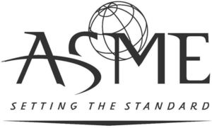

Trade Mark Journal No.2025/016 18 April 2025
WO0000001814519 (9,16,25,35,41,42)
Office of origin: United States of America
Date of International Registration:7 May 2024
Date of designation in the UK:
7 May 2024

The mark consists of the letters "ASME" with a portion of the "S" being an arc. Below are the words "SETTING THE STANDARD" with an upside down triangle underneath. Behind "ASME" is a stylized globe tilted to the left.
- Class 9
- Downloadable electronic publications, namely, e-books, books, magazines, journals, manuals, academic papers, newspapers, newsletters, pamphlets, brochures not for advertising purposes, industry reports, white papers, articles, guides, case studies and codes and standards, namely, engineering specification manuals, all in the field of engineering, technology and science; downloadable software for providing online classes, accessing library materials for use in educational courses, workshops, seminars, conferences, symposia and training in the field of engineering technology and science; multi-media software recorded on digital media, for providing online classes, accessing library materials for use in educational courses, workshops, seminars, conferences, symposia and training in the field of engineering technology and science; downloadable mobile applications for providing event and conference information for use in the field of engineering, technology and science; downloadable mobile applications for reading publications for use in the field of engineering, technology and science; downloadable videos in the field of engineering, technology and science; downloadable podcasts in the field of engineering, technology and science; blank USB flash drives; battery chargers; batteries; USB hubs; computer stylus; USB wall chargers; laser pointers; sleeves for laptops; fitted plastic films known as skins for covering and protecting electronic apparatus, namely, mobile phones, tablets and laptops, cell phone holders in the nature of grips, stands adapted for mobile phones, hand grips for cell phones, mounts for cell phones; USB cables; cell phone battery chargers; wireless chargers; audio speakers; ear buds; wireless ear buds; calculators; mousepads; sunglasses; tire pressure gauges; USB chargers adapted for car cigarette lighter sockets; tape measures; emergency auto kits comprised of a battery charger and.
- Class 16
- Print publications, namely, books, magazines, journals, codes and standards, namely engineering specification manuals, manuals, academic papers, newspapers, newsletters, pamphlets, brochures not for use in advertising, industry reports, white papers, articles, guides, case studies in the field of engineering, technology and science; writing instruments; pens; blank writing journals; decals; stickers; money clips; adhesive note paper; letter opener; retractable reels for name badge holders.
- Class 25
- Shirts, T-shirts, tops as clothing, dress shirts, blouses, hoodies, hooded sweatshirts, sweaters, shorts, tank tops, long-sleeve t-shirts, short sleeve t-shirts, pants, golf shirts, polo shirts, sweatshirts, vests, Henley shirts, sweatpants, jogging pants, jackets, coats, windbreakers, leggings, cardigans, baby bibs not of paper, bodysuits, baby bodysuits, stoles; caps; hats; beanies.
- Class 35
- Promoting the commercial and business interests of those involved with the engineering profession and promoting the use and services of engineers, technical professionals, and scientist; arranging, organizing and conducting engineering festivals for business purposes to promote the field of engineering; arranging, organizing and conducting business events in the nature of festivals for business purposes to promote educational opportunities and career opportunities in the fields of engineering, technology, science, medical, and biomedical; providing career information in the field of engineering, technology and science; organizing business networking events in the field of engineering, technology and science; arranging and conducting of exhibitions and trade shows for business purposes; arranging and conducting of trade exhibitions and trade shows for commercial or advertising purposes; providing employment information relating to career placement and career advancement information on engineering via a website; online retail services connected with clothing, apparel, backpacks, wallets, passport cases, business card holders, pet apparel, umbrellas, tote bags, and bags; online retail services connected with general consumer merchandise; online retail services connected with cosmetics and sanitizer; online retail services connected with electronics, electronics accessories, laptop sleeves, screen protectors, cell phone holders, grips and mounts, electronic cables, chargers, speakers, ear buds, calculators, mousepads, sunglasses, tire pressure gauges, tape measures, automotive emergency kits; online retail services connected with carabiners, pocket knives, flashlights; online retail services connected with jewelry and keychains; online retail services connected with stationery, stickers, paper, journals, letter openers; online retail services connected with household items, housewares, kitchenware, utensils, ornaments, décor; online retail services connected with tents not for camping, stadium seats and folding chairs; online retail services connected with, sporting goods, games, cards, golf accessories; online retail services connected with confectionaries, candy and chocolate.
- Class 41
- Providing online non-downloadable publications, namely, e-books, books, magazines, journals, manuals, academic papers, newspapers, newsletters, pamphlets, non-advertising brochures, industry reports, white papers, articles, guides, case studies and codes and standards, namely, engineering specification manuals, all in the field of engineering, technology and science; entertainment services, namely, providing podcasts in the field of engineering, technology and science; educational services, namely, providing training programs in order to obtain certification in the fields of engineering, technology, and science; education services, namely, providing technical education training in the fields of engineering, technology, and science; educational services, namely, conducting seminars and conferences in the fields of engineering, technology, and science; education services, namely, providing seminars and workshops in the field of engineering, technology and science; education services, namely, providing panel discussions in the fields of engineering, technology, and science; education services, namely, providing mentoring programs in the fields of engineering, technology, and science; education services, namely, providing panel discussions in the field of engineering, technology and science; interactive on-line training services for education and continuing education, namely, providing online classes in the field of engineering, technology, and science; live and online educational courses, classes, seminars, and workshops in the field of engineering, technology and science; providing online educational, non downloadable webinars for education and continuing education featuring lectures and discussions in the field of engineering, technology and science arranging and conducting of conferences, exhibitions, and symposia, in the field of engineering, technology and science for educational purposes; providing online non-downloadable educational videos in the fields of engineering, technology, and scienceon-downloadable educational videos in the fields of engineering, technology, and science; on-line academic library services; corporate educational training, namely, providing classes, courses, workshops and symposia in the field of engineering for engineering professionals; career counseling, namely, providing advice concerning education options to pursue career opportunities; arranging and conducting educational competitions in the fields of engineering, technology, and science; arranging and conducting of contests in the fields of engineering, technology, and science; arranging and conducting of engineering competitions; arranging and conducting of engineering contests; providing online non-downloadable videos in the field of engineering, technology and science; providing on-line non-downloadable videos featuring engineering, technology and science; arranging and conducting business conferences in the field of engineering, technology, and science.
- Class 42
- Providing temporary use of non-downloadable computer software, namely, for personnel certification application and credentialing management; testing, analysis and evaluation of personnel performing testing and quality control inspections for the purpose of certification; consulting services in the field of mechanical engineering; research relating to mechanical engineering; technical consulting in the field of engineering; hosting websites featuring technical information on engineering; certification and accreditation services, namely, evaluation of manufacturers, fabricators, designers, inspection companies, and personnel in conforming to established accreditation standards in the fields of engineering, technology, and science; testing, analysis and evaluation of service providers to determine conformity with established quality accreditation standards for the purpose of certification.
The American Society of Mechanical Engineers
Representative: Mitchiners, 31 Herne Hill LONDON SE24 9NF UNITED KINGDOM